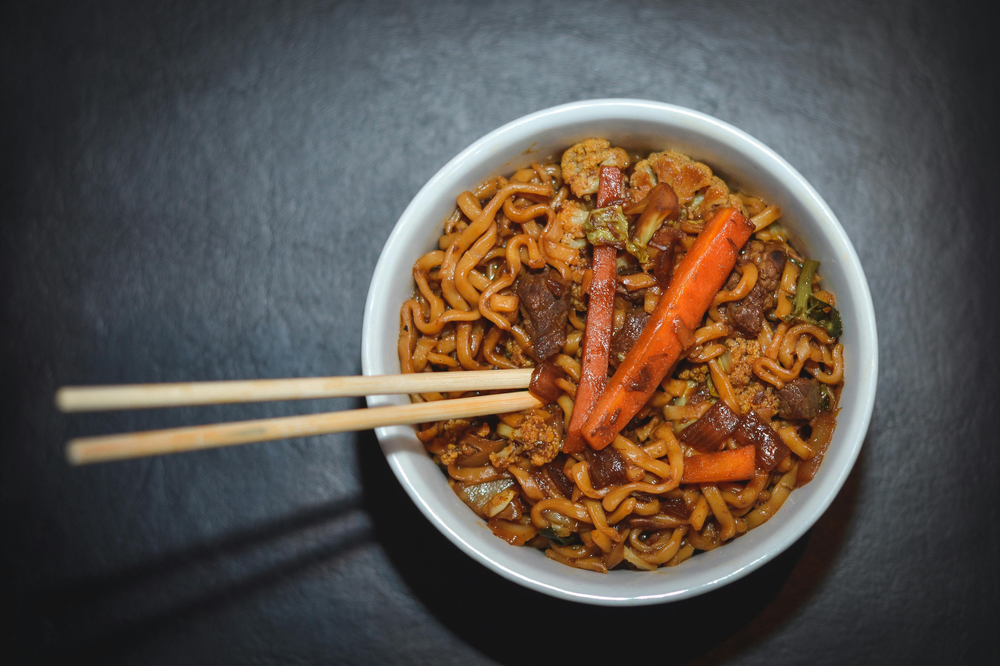

Home
Stir-fry Noodles

Stir fry noodles are one of those go-to meals that feel fast but still hit that perfect balance of comfort and flavour. It’s all about cooking things quickly over high heat so everything stays fresh, slightly crisp, and coated in a glossy, savoury sauce. The noodles soak up all that flavour while the garlic, vegetables, and protein bring texture and depth. It’s the kind of dish you can throw together after a long day, using whatever you’ve got in the fridge, and still end up with something that tastes like proper takeaway—just fresher and exactly how you like it.
Ingredients
- 200g noodles (egg noodles or any you like)
- 1 tbsp oil
- 2 cloves garlic (or 1 tsp garlic powder)
- 1 small onion, sliced
- 1–2 cups mixed vegetables (e.g. peppers, carrots, broccoli)
- 1 cooked chicken breast / prawns / tofu (optional)
- 2 tbsp soy sauce
- 1 tsp sweet chilli sauce (optional)
- 1 tsp sesame oil (optional)
- Salt & pepper
Steps
- Cook noodles: Boil according to packet, drain, and set aside.
- Cook protein (optional): Stir-fry chicken/prawns/tofu in oil until cooked, then remove.
- Fry aromatics: In the same pan, cook onion for a few minutes, then add garlic.
- Add veg: Toss in vegetables and stir-fry on high heat until slightly tender but still crisp.
- Combine: Add noodles and cooked protein back into the pan.
- Season: Pour in soy sauce, sweet chilli, and sesame oil. Toss everything together.
- Finish: Cook for another 1–2 minutes until hot and well coated.
Serve and enjoy!